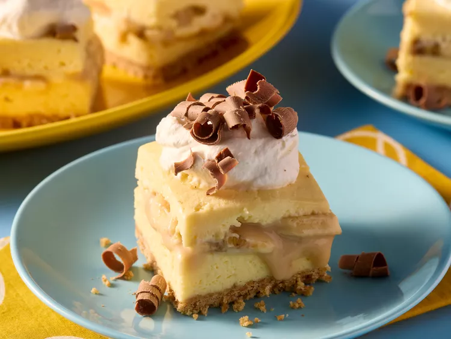
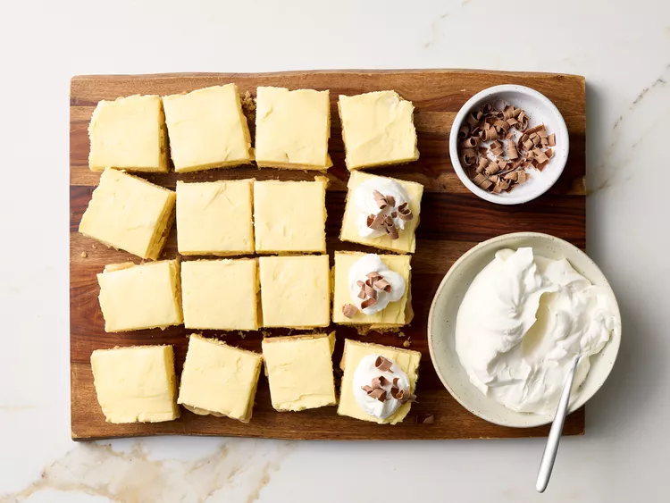

Banoffee Cheesecake Bars

These no bake banoffee cheesecake bars are incredibly tasty - imagine a Graham
cracker crust with layers of homemade caramel sauce, cream cheese filling, and fresh
banana slices. Serve topped with whipped cream and chocolate shavings.
Prep Time
- 40 Minutes
Cook Time
- 10 Minutes
Chill Time
- 5 Hours
Total Time
- 5 Hours, 50 Minutes
Servings
- 16
Ingredients
Crust:
- 1 1/4 cups graham cracker crumbs
- 3 tablespoons white sugar
- 1/3 cup butter, melted
Toffee Sauce Filling:
- 1/4 cup butter
- 1/3 cup packed dark brown sugar
- 1/3 cup whipping cream
- 1/2 teaspoon vanilla extract
Cheesecake:
- 2 (8-ounce) packages cream cheese, softened
- 1 (14-ounce) can sweetened condensed milk
- 1 1/2 cups whipping cream
- 1 (3.4-ounce) package vanilla-flavor instant pudding mix
- 5 tablespoons banana-flavor instant pudding mix (about 1/2 of 3.4-ounce package)
- 1 1/2 teaspoons vanilla extract
- 1/8 teaspoon salt
- 2 large bananas, thinly sliced
Toppers:
- 2 cups sweetened whipped cream
- chocolate shavings
Directions
- Gather all ingredients.
- For the Crust: Line a 9-inch square baking pan with parchment paper,
letting excess overhang on two sides. Stir together the graham cracker crumbs and
white sugar in a medium bowl. Add 1/3 cup melted butter; stir to combine.
- Pour crust mixture into prepared pan and press evenly onto bottom. Chill crust in the
refrigerator for at least 1 hour.
- For the Toffee Sauce Filling: Meanwhile, melt 1/4 cup butter in a small saucepan over
medium heat. Stir in brown sugar. Bring to a boil and stir until sugar is dissolved.
Reduce heat and boil gently, uncovered, for 5 minutes, stirring occasionally.
- Carefully stir in 1/3 cup whipping cream. Return to a boil and cook, stirring constantly, until slightly
thickened, about 3 minutes. Remove from heat; stir in 1/2 teaspoon vanilla extract. Let cool to room temperature.
- For the Cheesecake:Beat cream cheese in a large bowl with an electric mixer at medium speed
until light and fluffy. Add sweetened condensed milk and 1 1/2 cups whipping cream; beat until smooth,
scraping down sides of bowl as needed.
- Add pudding mixes, 1 1/2 teaspoon vanilla, and salt; beat until smooth and well combined (mixture will be very thick).
- Spread half of the pudding mixture over the chilled crust in the pan. Top with toffee sauce
filling, spreading to an even layer.
- Arrange banana slices in an even layer over the toffee filling. Top with dollops of the remaining pudding mixture,
carefully spreading in an even layer. Chill, covered, at least 4 hours (or up to overnight).
- Cut into 16 bars. Top cheesecake bars with sweetened whipped cream and chocolate shavings.

Nutrition Facts! (per serving)
Calories
- 472
Fat
- 32g
Carbs
- 42g
Protein
- 6g
Back Home!